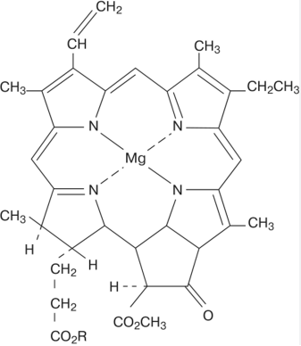
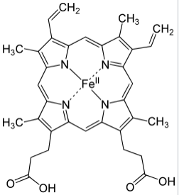
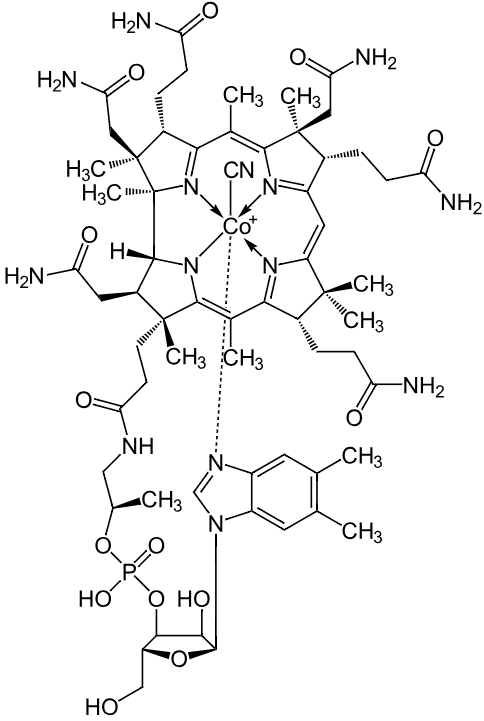
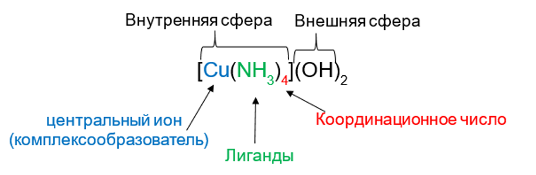

Значение комплексных соединений
Комплексные соединения играют важнейшую роль в природе, являясь основой жизни (гемоглобин, хлорофилл, витамины, ферменты и многое другое). Они необходимы для обмена веществ, дыхания, питания растений и животных.

Хлорофилл

Гемоглобин

Витамин B12
Определение и структура
Комплексные (или координационные) соединения - это соединения, получаемые сочетанием более простых веществ. Центральное место занимает катион металла, называемый центральным ионом или комплексообразователем. С ним связаны или координированы нейтральные молекулы или ионы, которые называются лигандами. Комплексообразователь и лиганды образуют внутреннюю координационную сферу, которую при записи формулы заключают в квадратные скобки. Остальные положительные или отрицательные ионы, не разместившиеся во внутренней сфере, составляют внешнюю координационную сферу.

Классификация комплексных соединений
Многообразие комплексных соединений требует их систематизации. Существует несколько основных способов классификации.
1. По заряду внутренней сферы
а) Катионные комплексы
Внутренняя сфера (комплексный ион) имеет положительный заряд. Во внешней сфере находятся анионы.
[Сu(NH₃)₄](OH)₂
[Al(H₂O)₆]Cl₃
[Zn(NH₃)₄]Cl₂
б) Анионные комплексы
Внутренняя сфера имеет отрицательный заряд. Во внешней сфере находятся катионы.
K₄[Fe(CN)₆]
K[Al(OH)₄]
K₂[Zn(ОН)₄]
в) Нейтральные комплексы
Соединения состоят только из внутренней сферы, заряд которой равен нулю. Внешняя сфера отсутствует.
[Ni(CO)₄]⁰
[Pt(NH₃)₂Cl₂]⁰
2. По классу соединения
По этому признаку комплексы делятся на кислоты, основания и соли, сохраняя характерные для этих классов свойства.
Кислоты
H₂[ZnF₆]
H[AuCl₄]
Основания
[Ag(NH₃)₂]OH
[Сu(NH₃)₄](OH)₂
Соли
K₃[Fe(CN)₆]
[Сu(NH₃)₄]SO₄
3. По природе лиганда
Аквакомплексы
H₂O (вода)
[Al(H₂O)₆]Cl₃
Аммиакаты
NH₃ (аммиак)
[Pt(NH₃)₂Cl₂]
Ацидокомплексы
Кислотные остатки
K₄[Fe(CN)₆]
Гидроксокомплексы
OH⁻ (гидроксид)
K[Al(OH)₄]
4. По способности проводить электрический ток
| Тип | Характеристика | Пример |
|---|---|---|
| Электролиты | Имеют внешнюю сферу, диссоциируют на ионы | [Сu(NH₃)₄](ОН)₂ |
| Неэлектролиты | Состоят только из внутренней сферы, не диссоциируют | [Ni(CO)₄] |
Комплексообразователи и лиганды
Комплексообразователи
Комплексообразователями могут быть нейтральные атомы, катионы и анионы, имеющие вакантные орбитали. Наибольшей способностью к комплексообразованию обладают катионы переходных элементов:
Лиганды
В качестве лигандов могут быть:
- Молекулы: H₂O (аква), NH₃ (аммин), CO, NO
- Анионы: Cl⁻ (хлоро), Br⁻ (бромо), I⁻ (йодо), OH⁻ (гидроксо), CN⁻ (циано), SCN⁻ (тиоцианато)
Лиганды, как правило, имеют одну или несколько неподелённых пар электронов.
Определение заряда комплексообразователя
Заряд комплексообразователя определяется, исходя из заряда комплексного иона и заряда лигандов:
[Fe(CN)₆]⁴⁻
[x + (-1)×6] = -4
x = +2
[Pt(NH₃)₂Cl₂]⁰
[x + (0×2) + (-1)×2] = 0
x = +2
[Ag(NH₃)₂]⁺
[x + (0×2)] = +1
x = +1
Номенклатура комплексных соединений
В названиях комплексных соединений используют общепринятое правило: сначала называют анион, затем катион.
Правила названия комплексных катионов:
При составлении названия комплексного катиона соблюдают следующий порядок:
- Указать число отрицательно заряженных лигандов, используя греческие числительные: ди, три, тетра, пента, гекса и т.д.;
- Назвать отрицательно заряженные лиганды с окончанием «о» (Cl⁻ – хлоро, I⁻ – йодо, SO₄²⁻ – сульфато, OH⁻ – гидроксо, CN⁻ – циано, NO₃⁻ – нитро и т.д.);
- Назвать число и название нейтральных лигандов: H₂O – аква, NH₃ – аммин, CO – карбонил;
- Назвать комплексообразователь с указанием его степени окисления.
Греческие числительные и названия лигандов:
| Числительные | Лиганды | Название |
|---|---|---|
| 2 — ди- | H₂O | аква |
| 3 — три- | NH₃ | аммин |
| 4 — тетра- | CO | карбонил |
| 5 — пента- | OH⁻ | гидроксо- |
| 6 — гекса- | CN⁻ | циано- |
| NO₃⁻ | нитро- |
Примеры названий комплексных катионов:
[Cu(NH₃)₄]SO₄
сульфат тетрааммин меди(II)
Сульфат тетраамминмеди(II)
[Co(NH₃)₅Br]SO₄
сульфат бромо- пентааммин- кобальта(III)
Сульфат бромопентаамминкобальта(III)
Названия комплексных анионов
Название комплексного аниона составляется аналогично названию катиона и заканчивается суффиксом «ат».
K₃[Fe(CN)₆]
калий гексациано- феррат(III)
Гексацианоферрат(III) калия
K₂[Zn(OH)₄]
калий тетрагидроксо- цинкат
Тетрагидроксоцинкат калия
Названия нейтральных комплексов
Нейтральный комплекс называют так же, как и катионный, но комплексообразователь указывают в именительном падеже, степень окисления не указывают.
[Pt(NH₃)₂Cl₂]
дихлоро- диаммин- платина
Дихлородиамминплатина
(степень окисления не указывается)
Координационное число и устойчивость
Координационное число (КЧ)
Показывает число лигандов, которые располагаются вокруг центрального иона. Зависит от заряда центрального атома:
| Заряд центрального атома | Координационное число |
|---|---|
| +1 | 2 |
| +2 | 4 |
| +3 | 6 |
| +4 | 8 |
Наиболее частые координационные числа:
| Ион | КЧ | Ион | КЧ | Ион | КЧ |
|---|---|---|---|---|---|
| Al³⁺ | 6 | Cu²⁺ | 4 и 6 | Co²⁺ | 4 и 6 |
| Hg²⁺ | 4 | Au³⁺ | 4 | Co³⁺ | 6 |
| Pb²⁺ | 4 | Pt⁴⁺ | 6 | Fe²⁺ | 6 |
| Sn⁴⁺ | 6 | Ni²⁺ | 4 и 6 | Fe³⁺ | 6 |
| Ag⁺ | 2 | Ni³⁺ | 6 | Cr³⁺ | 6 |
Дентатность лигандов
Дентатность — количество связей, которые может образовывать лиганд. Например, в [Cu(NH₃)₄](OH)₂ дентатность аммиака равна 1 (монодентатен).
Образование комплексов меди с аммиаком
CuSO₄ + 2NH₃ + 2H₂O → Cu(OH)₂↓ + (NH₄)₂SO₄
голубой раствор → синий осадок
Cu(OH)₂ + 4NH₃ → [Cu(NH₃)₄](OH)₂
синий осадок → васильковый раствор
Диссоциация и константа нестойкости
Диссоциация комплексных соединений
Комплексные соединения диссоциируют в растворе по типу сильного электролита (первичная диссоциация):
[Cu(NH₃)₄]SO₄ → [Cu(NH₃)₄]²⁺ + SO₄²⁻
Комплексные ионы способны ступенчато диссоциировать по типу слабого электролита (вторичная диссоциация):
[Cu(NH₃)₄]²⁺ ⇌ [Cu(NH₃)₃]²⁺ + NH₃
[Cu(NH₃)₃]²⁺ ⇌ [Cu(NH₃)₂]²⁺ + NH₃
[Cu(NH₃)₂]²⁺ ⇌ [Cu(NH₃)]²⁺ + NH₃
[Cu(NH₃)]²⁺ ⇌ Cu²⁺ + NH₃
Константа нестойкости (Кн)
Выражение константа нестойкости для тетраамминмеди(II):
Kн = [Cu²⁺][NH₃]⁴ / [[Cu(NH₃)₄]²⁺]
где [Cu²⁺], [NH₃] и [[Cu(NH₃)₄]²⁺] — равновесные концентрации (моль/л).
Чем меньше значение Кн, тем более устойчиво комплексное соединение.
Свойства комплексных соединений
В растворах комплексных веществ при протекании химических реакций проявляются свойства не только отдельных ионов, атомов или молекул, входящих в состав этого комплекса, а и свойства целиком всего координационного соединения.
Дополнительная информация: urok.1sept.ru
Примеры решения задач
Пример 1
Задача: Определите комплексообразователь, его заряд и координационное число в Ca[Al(OH)₅H₂O].
Решение:
1. Определим внешнюю и внутреннюю сферы:
Формула: Ca[Al(OH)₅H₂O]
Внешняя сфера: Ca²⁺
Внутренняя сфера: [Al(OH)₅H₂O]²⁻
2. Комплексообразователь — Al (алюминий)
3. Определим заряд комплексообразователя (x):
Заряд комплексного иона: -2
Лиганды: 5 OH⁻ (заряд -1 каждый) и 1 H₂O (заряд 0)
Составим уравнение: x + 5×(-1) + 1×0 = -2
x - 5 = -2 → x = +3
4. Координационное число = количество лигандов = 5 OH⁻ + 1 H₂O = 6
Ответ: Комплексообразователь — Al³⁺, заряд +3, координационное число = 6.
Объяснение: В соединении Ca[Al(OH)₅H₂O] комплексный ион [Al(OH)₅H₂O]²⁻ имеет заряд -2. Лиганды: 5 OH⁻ дают суммарный заряд -5, 1 H₂O имеет заряд 0. Чтобы суммарный заряд был -2, заряд алюминия должен быть +3. Координационное число равно общему количеству лигандов: 5 + 1 = 6.
Пример 2
Задача: Определите комплексообразователь, его заряд и координационное число в K₄[Ir(SO₄)₃Cl].
Решение:
1. Определим внешнюю и внутреннюю сферы:
Формула: K₄[Ir(SO₄)₃Cl]
Внешняя сфера: 4K⁺
Внутренняя сфера: [Ir(SO₄)₃Cl]⁴⁻
2. Комплексообразователь — Ir (иридий)
3. Определим заряд комплексообразователя (x):
Заряд комплексного иона: -4
Лиганды: 3 SO₄²⁻ (заряд -2 каждый) и 1 Cl⁻ (заряд -1)
Составим уравнение: x + 3×(-2) + 1×(-1) = -4
x - 6 - 1 = -4 → x - 7 = -4 → x = +3
4. Координационное число = количество лигандов = 3 SO₄²⁻ + 1 Cl⁻ = 4
Ответ: Комплексообразователь — Ir³⁺, заряд +3, координационное число = 4.
Объяснение: В соединении K₄[Ir(SO₄)₃Cl] комплексный ион [Ir(SO₄)₃Cl]⁴⁻ имеет заряд -4. Лиганды: 3 SO₄²⁻ дают суммарный заряд -6, 1 Cl⁻ дает заряд -1. Чтобы суммарный заряд был -4, заряд иридия должен быть +3. Координационное число равно общему количеству лигандов: 3 + 1 = 4.
Пример 3
Задача: Какие из следующих ионов могут быть комплексообразователями: Li⁺, Na⁺, Ti⁴⁺, Sc³⁺, Be²⁺, Fe³⁺, Fe²⁺?
Решение:
1. Проанализируем каждый ион:
- Li⁺ и Na⁺ — ионы щелочных металлов, имеют большой ионный радиус, малый заряд, полностью заполненные электронные оболочки. Очень слабые комплексообразователи.
- Ti⁴⁺ — ион переходного металла, имеет высокий заряд (+4), незаполненные d-орбитали. Хороший комплексообразователь.
- Sc³⁺ — ион переходного металла, заряд +3, незаполненные d-орбитали. Хороший комплексообразователь.
- Be²⁺ — ион щелочноземельного металла, малый заряд, полностью заполненные оболочки. Слабый комплексообразователь.
- Fe³⁺ и Fe²⁺ — ионы переходного металла, имеют незаполненные d-орбитали, заряды +3 и +2 соответственно. Отличные комплексообразователи.
2. Комплексообразователями обычно являются ионы переходных металлов, которые имеют:
- Незаполненные d- или f-орбитали
- Достаточно высокий заряд
- Малый ионный радиус
Ответ: Ti⁴⁺, Sc³⁺, Fe³⁺, Fe²⁺.
Объяснение: Ионы переходных металлов (Ti⁴⁺, Sc³⁺, Fe³⁺, Fe²⁺) имеют незаполненные d-орбитали, что позволяет им принимать неподеленные электронные пары от лигандов. Ионы щелочных (Li⁺, Na⁺) и щелочноземельных (Be²⁺) металлов имеют полностью заполненные электронные оболочки и большой ионный радиус, поэтому образуют менее устойчивые комплексы.
Пример 4
Задача: Хром образует с аммиаком две комплексные соли: CrCl₃·5NH₃ и CrCl₃·6NH₃. Азотнокислое серебро осаждает весь хлор из первой соли, а из второй - только 2/3 хлора. Напишите формулы.
Решение:
1. Проанализируем реакцию с AgNO₃:
AgNO₃ осаждает только хлор, находящийся во внешней сфере комплекса в виде ионов Cl⁻. Хлор, находящийся во внутренней сфере (в качестве лиганда), не осаждается.
2. Для соли CrCl₃·6NH₃:
Если AgNO₃ осаждает весь хлор (3 иона Cl⁻), значит весь хлор находится во внешней сфере.
Формула: [Cr(NH₃)₆]Cl₃
Диссоциация: [Cr(NH₃)₆]Cl₃ → [Cr(NH₃)₆]³⁺ + 3Cl⁻
3. Для соли CrCl₃·5NH₃:
Если AgNO₃ осаждает 2/3 хлора (2 из 3 ионов Cl⁻), значит 2 иона Cl⁻ находятся во внешней сфере, а 1 ион Cl⁻ — во внутренней сфере (в качестве лиганда).
Формула: [Cr(NH₃)₅Cl]Cl₂
Диссоциация: [Cr(NH₃)₅Cl]Cl₂ → [Cr(NH₃)₅Cl]²⁺ + 2Cl⁻
Ответ: [Cr(NH₃)₆]Cl₃ и [Cr(NH₃)₅Cl]Cl₂
Объяснение: Азотнокислое серебро реагирует только с хлорид-ионами, находящимися во внешней сфере комплекса. Если осаждается весь хлор (3 Cl⁻), значит все ионы хлора находятся во внешней сфере: [Cr(NH₃)₆]Cl₃. Если осаждается 2/3 хлора (2 Cl⁻), значит 1 Cl⁻ находится во внутренней сфере в качестве лиганда: [Cr(NH₃)₅Cl]Cl₂.
Пример 5
Задача: Напишите математическое выражение константы нестойкости для [Cu(NH₃)₄]SO₄.
Решение:
1. Запишем уравнение диссоциации комплексного соединения:
Первичная диссоциация (сильный электролит):
[Cu(NH₃)₄]SO₄ → [Cu(NH₃)₄]²⁺ + SO₄²⁻
2. Вторичная диссоциация комплексного иона (слабый электролит):
[Cu(NH₃)₄]²⁺ ⇌ Cu²⁺ + 4NH₃
3. Константа нестойкости (Kн) — это константа равновесия для обратимого распада комплексного иона:
Kн = [Cu²⁺][NH₃]⁴ / [[Cu(NH₃)₄]²⁺]
где:
- [Cu²⁺] — равновесная концентрация ионов меди(II)
- [NH₃] — равновесная концентрация аммиака
- [[Cu(NH₃)₄]²⁺] — равновесная концентрация комплексного иона
Ответ: Kн = [Cu²⁺][NH₃]⁴ / [[Cu(NH₃)₄]²⁺]
Объяснение: Константа нестойкости характеризует устойчивость комплексного иона в растворе. Для комплексного иона [Cu(NH₃)₄]²⁺, который обратимо диссоциирует на Cu²⁺ и 4NH₃, константа нестойкости равна произведению равновесных концентраций продуктов диссоциации (Cu²⁺ и NH₃), деленному на равновесную концентрацию комплексного иона. Чем меньше значение Kн, тем устойчивее комплекс.
Подготовка к ОГЭ по химии
Задания из открытого банка ФИПИ по теме "Комплексные соединения"
Загрузка заданий из банка ФИПИ...
Подготовка к ЕГЭ по химии
Задания из открытого банка ФИПИ по теме "Комплексные соединения"
Загрузка заданий из банка ФИПИ...
Тестирование по теме "Комплексные соединения"
Выберите вариант теста. Каждый тест содержит 5 заданий с единственным правильным ответом.